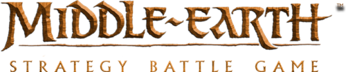
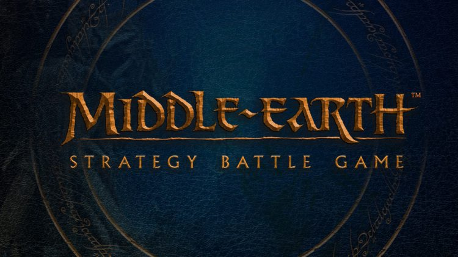
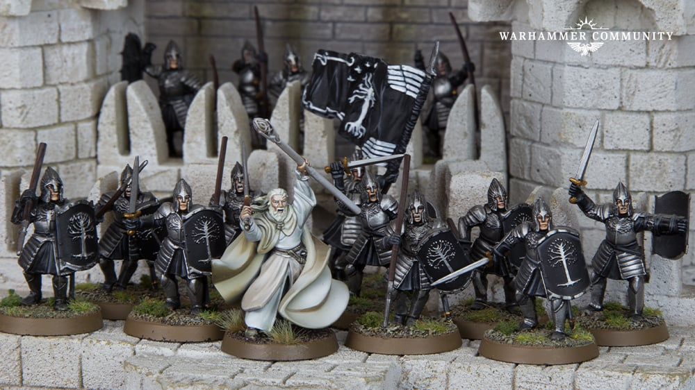
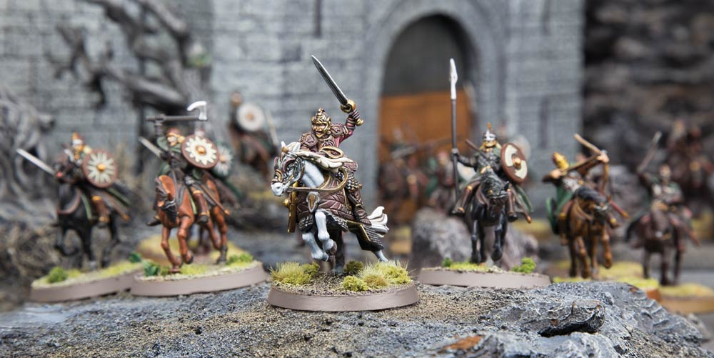
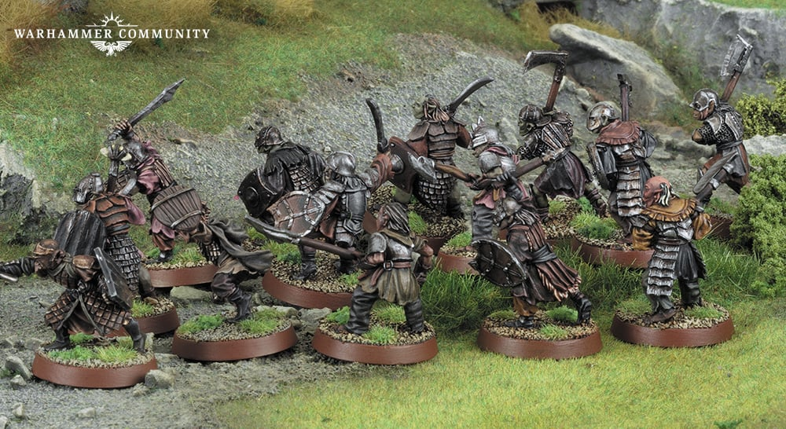
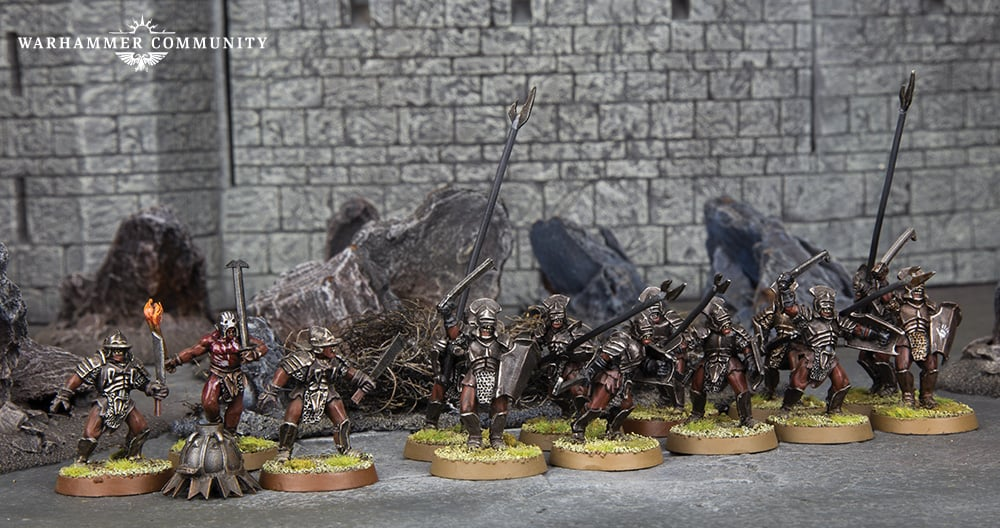

Welcome to the Middle Earth
The Middle-earth Strategy Battle Game is a tabletop wargame set in J.R.R. Tolkien's fantasy world. Players assemble armies from various factions, reenacting iconic battles from "The Lord of the Rings" trilogy. It involves strategy, miniatures, and dice-driven combat, capturing the epic conflicts and characters of Middle-earth in a dynamic and immersive gaming experience.

Factions of Middle Earth

The Minas Tirith Army in Middle-earth Strategy Battle Game represents Gondor's stalwart defenders. With disciplined infantry, skilled archers, noble knights, and legendary heroes like Aragorn and Boromir, they stand resolute against Sauron's forces. Their resilience, tactics, and leadership make them a beacon of hope in the battles of Middle-earth.

The Rohan Army in Middle-earth Strategy Battle Game embodies the valiant riders of the Riddermark. Mounted cavalry like the Riders of Rohan charge with unmatched speed and power. Led by heroes like King Théoden and Éowyn, they defend their land with honor, swift strikes, and unyielding courage against Saruman's schemes and Mordor's darkness.

The Mordor Army in Middle-earth Strategy Battle Game embodies Sauron's malevolent might. Vast hordes of Orc infantry overwhelm foes, while Ringwraiths sow fear and heroes like the Witch-king lead. Trolls, Nazgûl, and siege engines bolster their strength. With darkness and necromancy, they aim to cover all in the shadow of Mordor.

The Isengard Army in Middle-earth Strategy Battle Game represents Saruman's industrial might and treacherous forces. Uruk-hai infantry form the core, backed by ruthless crossbowmen and siege engines. Heroes like Lurtz and Saruman wield dark powers. With advanced tactics and industry, they seek dominion over Middle-earth under Saruman's command.
"Three Rings for the Elven-kings under the sky, Seven for the Dwarf-lords in their halls of stone, Nine for Mortal Men doomed to die, One for the Dark Lord on his dark throne. In the Land of Mordor where the Shadows lie. One Ring to rule them all, One Ring to find them, One Ring to bring them all and in the darkness bind them. In the Land of Mordor where the Shadows lie."
Call to Action! It's time!